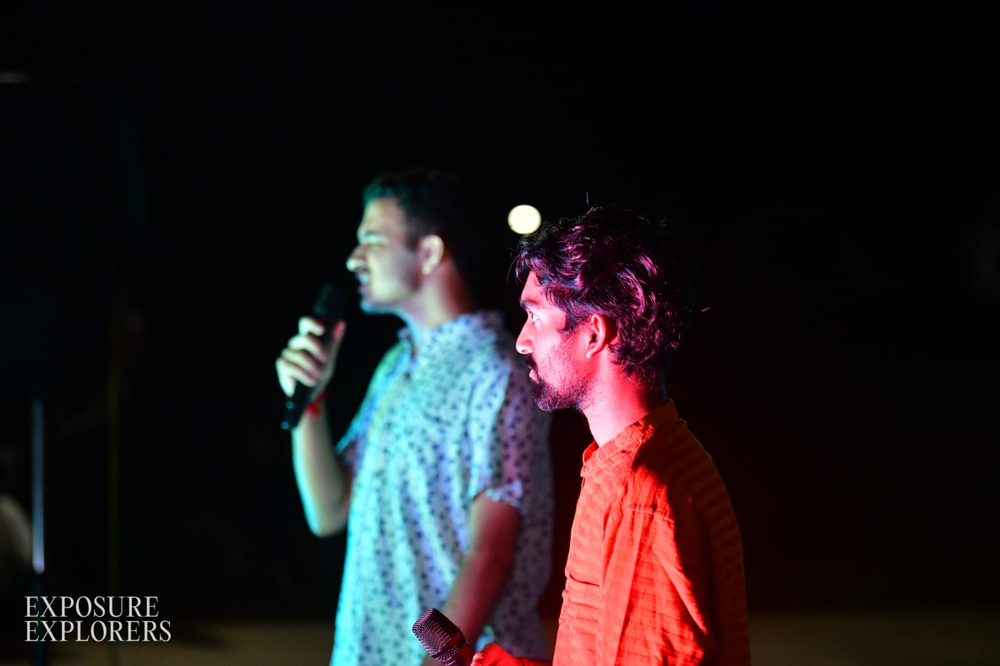
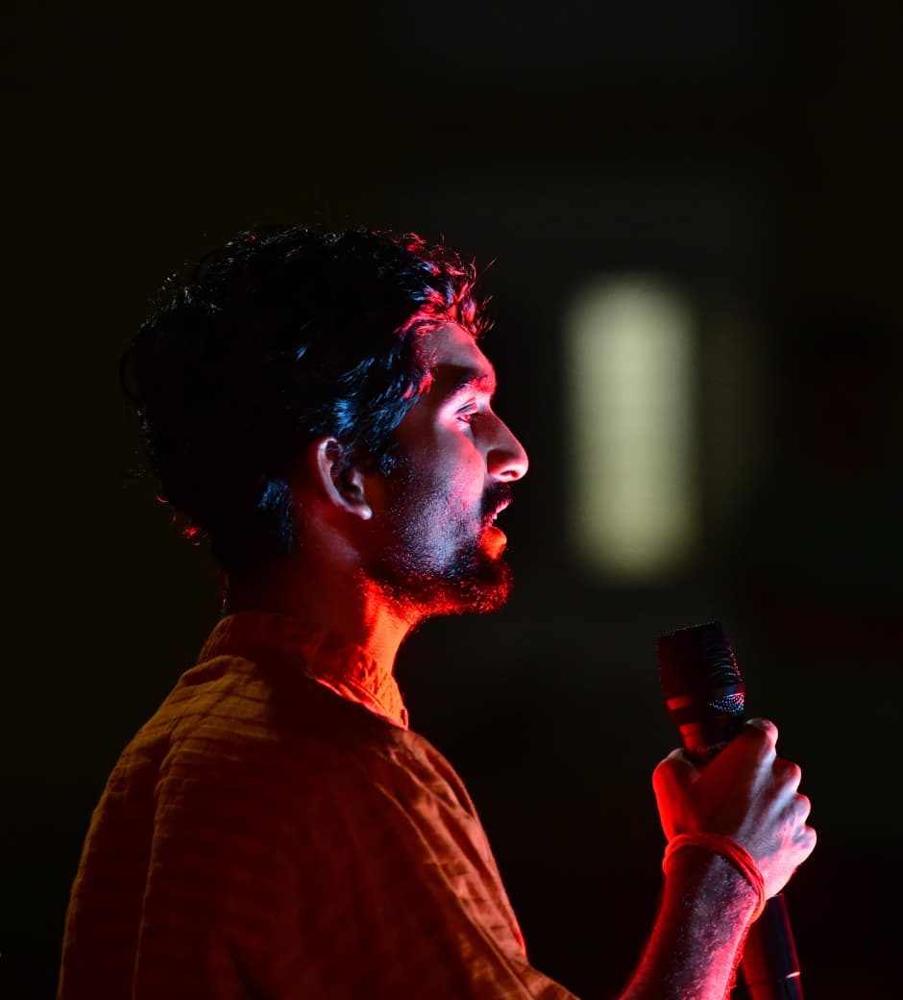
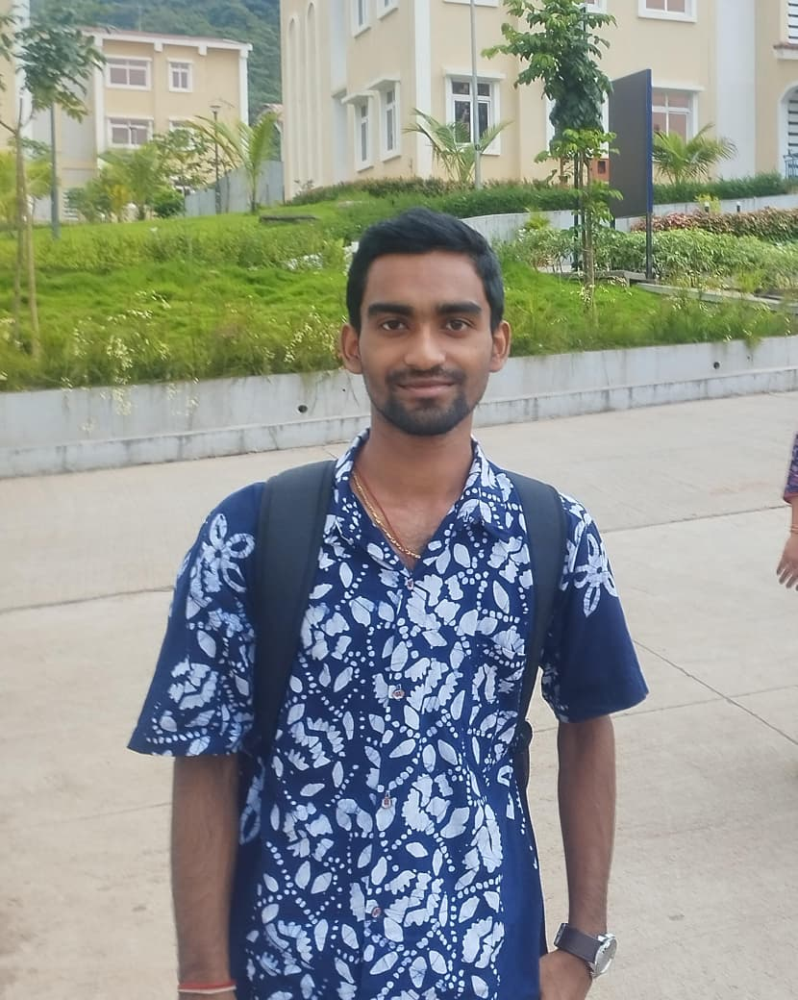
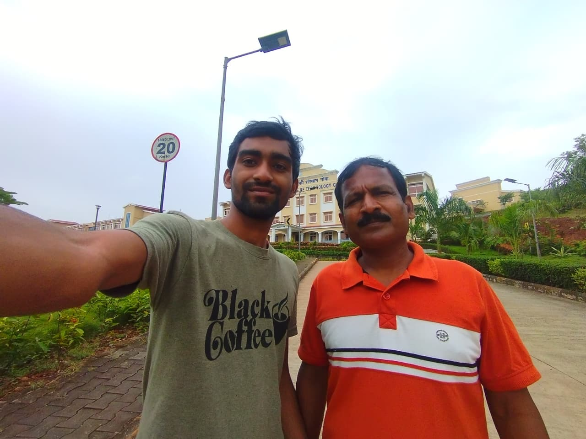
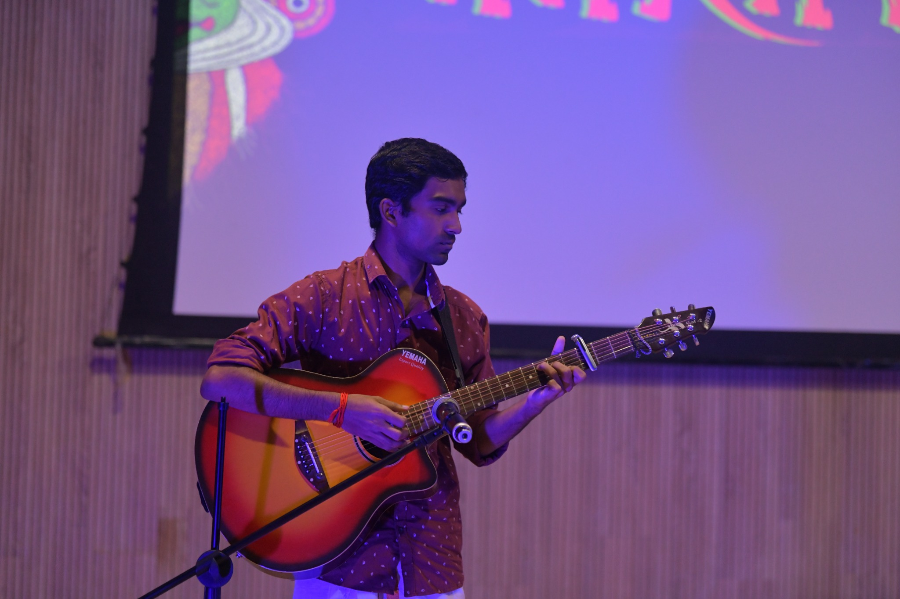
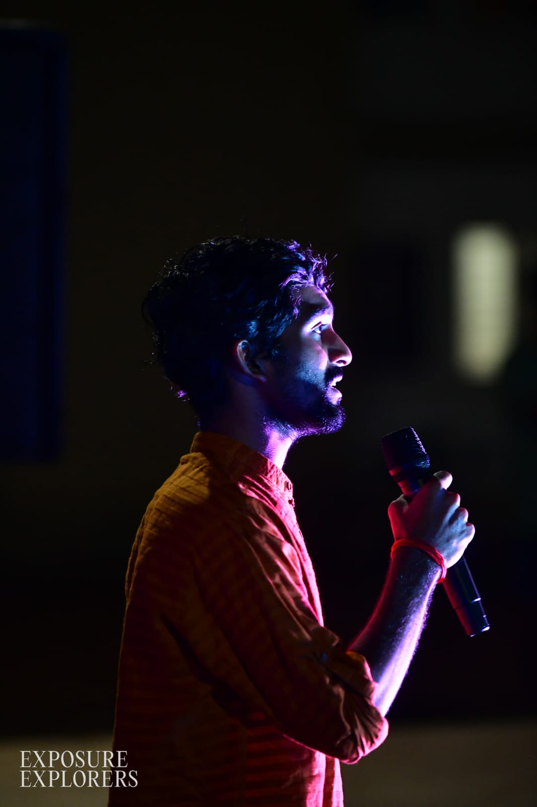
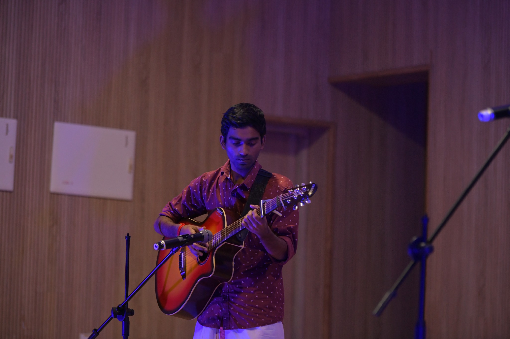
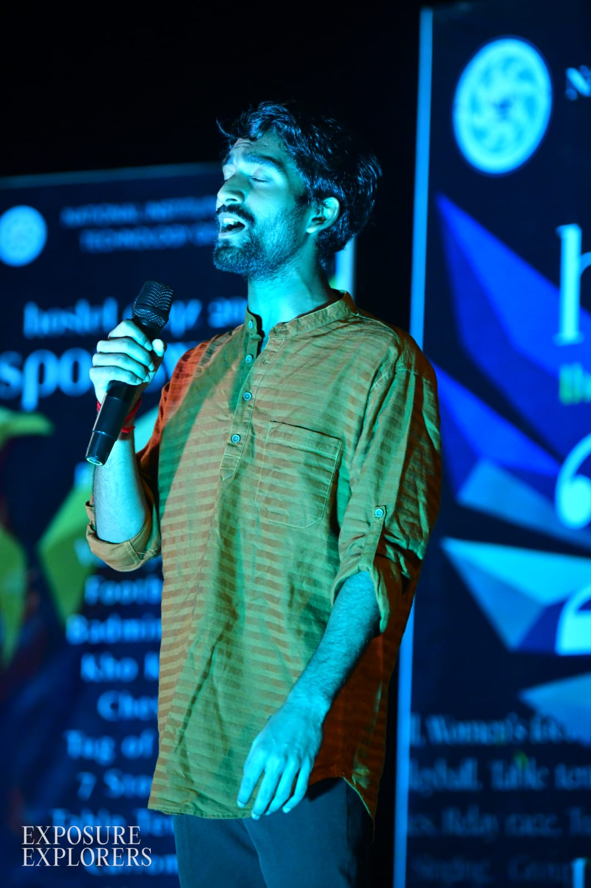
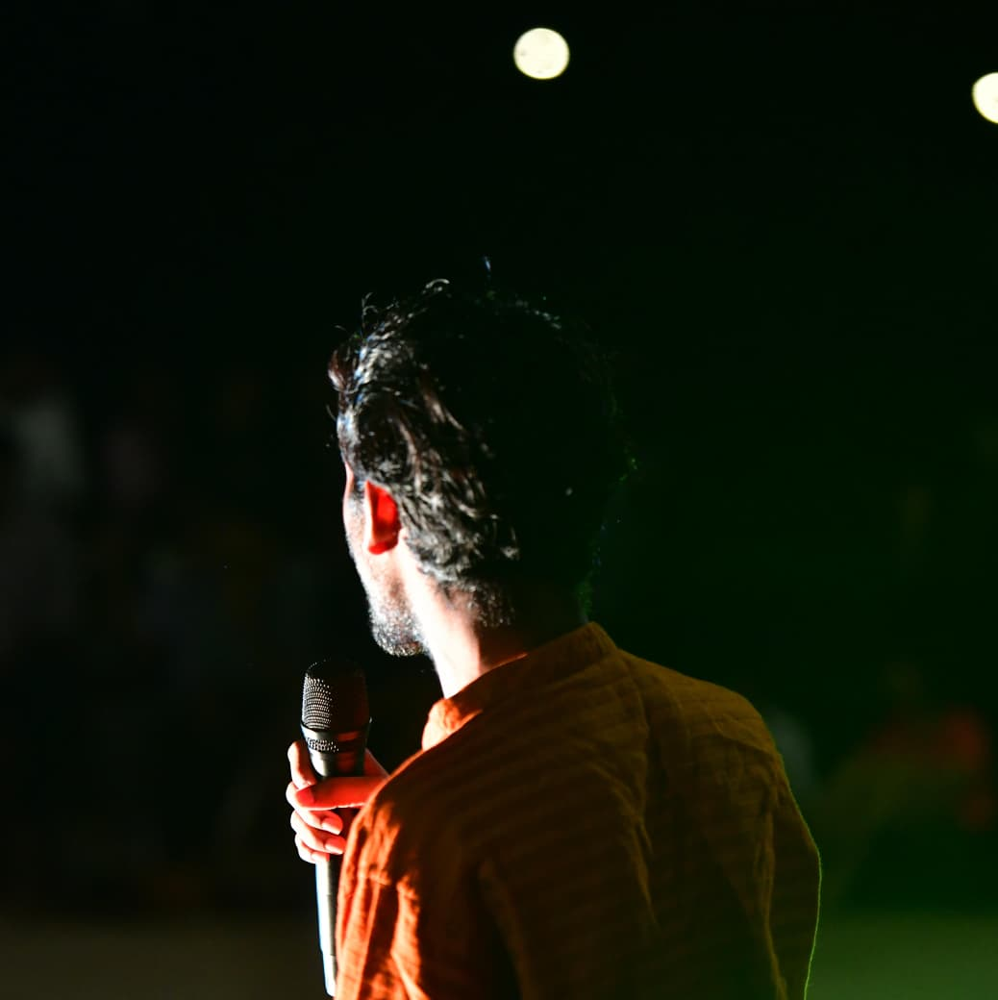
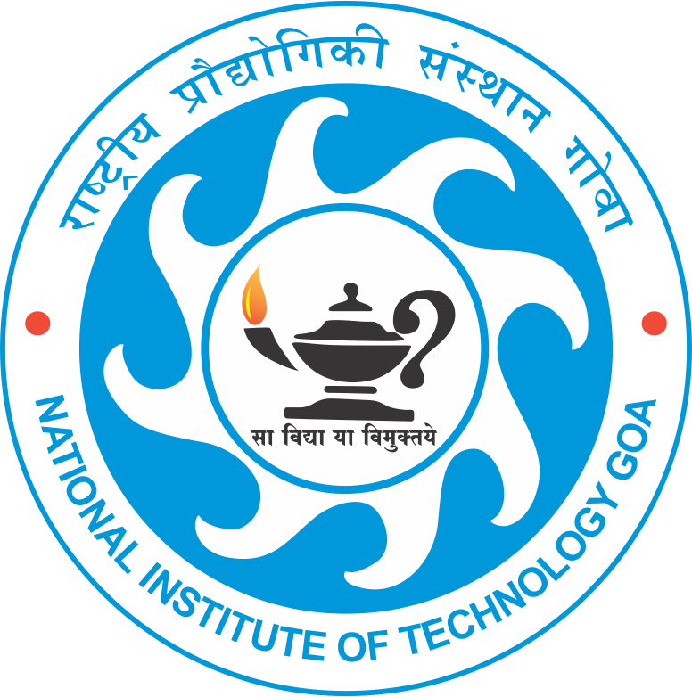

Hua Hai
A personal music project built around melody, mood and arrangement.
I create music, compose original ideas, and put my own touch on the songs I love. From experimenting with sounds in FL Studio to sharing covers and original music on Instagram, music is where I create, explore, and express myself.




I am currently pursuing my Bachelor’s degree in Electrical and Electronics Engineering (EEE) at the National Institute of Technology Goa. My education has built my interest in electrical systems, electronics, programming and practical project development.
Outside academics, I enjoy exploring creative activities that keep me curious and expressive. I love playing the guitar, making drawings, playing football, experimenting with music and finding new ways to turn ideas into something I can share.
I am currently pursuing my Bachelor’s degree in Electrical and Electronics Engineering (EEE). My engineering journey has helped me develop a strong interest in electrical systems, electronics, programming, and practical project development. I enjoy learning how technology works and applying my knowledge to build and experiment with real-world projects.
Alongside engineering, music is one of my biggest passions. I am enthusiastic about exploring music production using FL Studio, where I experiment with beats, melodies, sounds, and different styles of music. I also enjoy playing the guitar, which allows me to express my creativity and connect with music on a deeper level.
As a music enthusiast and aspiring content creator, I love creating new music, exploring fresh ideas, and sharing my musical journey with others. For me, music is not just a hobby—it is a creative space where I can experiment, express myself, and continuously learn something new.
I am currently pursuing my Bachelor’s degree in Electrical and Electronics Engineering (EEE), combining technical learning with creative exploration.






I use FL Studio to experiment with melodies, beats, arrangements and different sounds. Some ideas begin as a simple melody and grow into a complete project. The audio samples below are part of that journey, while the FL Studio logo opens my project folder for a deeper look at the work behind the music.
A personal music project built around melody, mood and arrangement.
A production experiment where I explored my own musical ideas.
A cover created and shared as part of my musical content journey.
I enjoy taking songs I connect with, giving them my own interpretation, and sharing the result as Instagram content. The phone mockup on the left is a visual preview for this side of my creative work — tap it to visit my Instagram profile.
Visit Instagram ↗